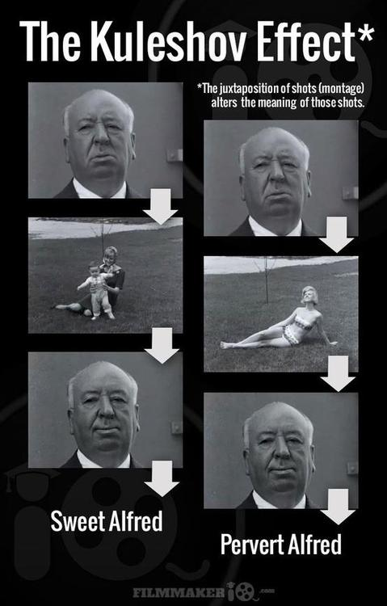

편집
편집의 가장 기본이라 할 수 있는 몽타주 기법은 쿨레쇼프 효과에 착안합니다.
이후 몽타주 기법은 세르게이 아이젠슈타인에 의해 정립됩니다.

위 사진은 쿨레쇼프 효과를 설명한 사진입니다. 동일한 알프레드 히치콕의 모습을 붙였는데도
중간에 들어가는 영상에 따라 알프레드의 웃음의 의미가 달라집니다.
이처럼 영상도 어떻게 배치하느냐에 따라 그 일련의 영상들이 통합되어 의미하는 바가 달라질 수 있습니다.
영화에서 마법이란 때론 대단한 촬영에서 오는 것이 아니라 두 장면을 이으는데서 오기도 합니다.
이는 1910년대 교차편집의 발명, 1920년대 몽타주의 발명으로 이루어진 역사적 쾌거입니다.
영화에서 편집이란 촬영만큼 중요한 부분입니다. 영상 전환의 속도, 순서, 배치에 따라 의미가 바뀌고
관객들을 끌어들일 수 있느냐 없느냐를 정하기 때문입니다.
위 영상은 영화에서 쓰인 위대한 영상 편집 사례들을 모았습니다.